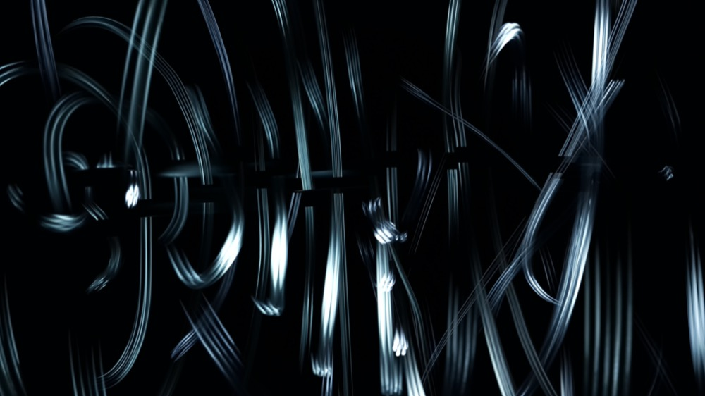
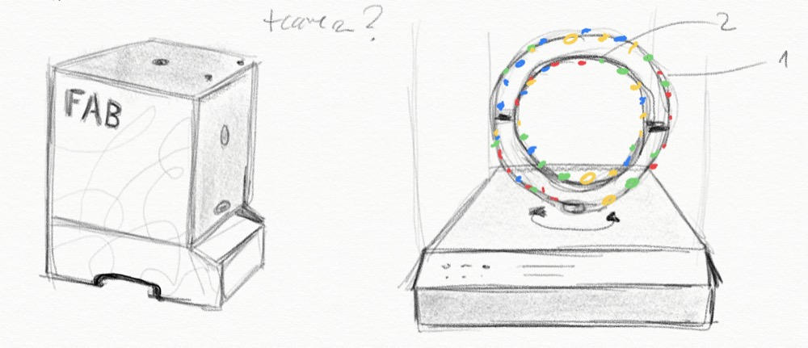
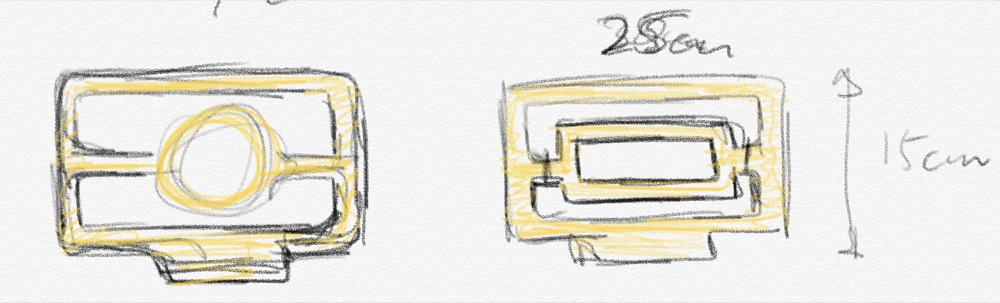
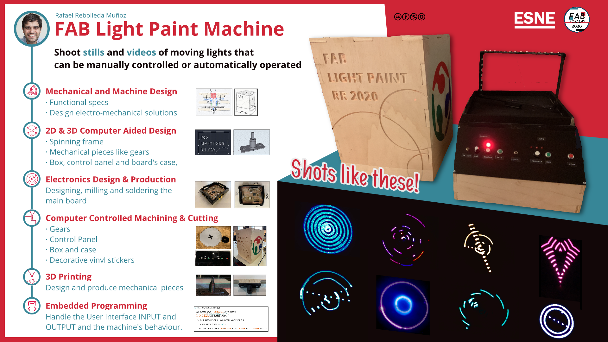

<!DOCTYPE html>
<html lang="en"></html>
<head>
  <meta charset="utf-8">
  <meta content="IE=edge" http-equiv="X-UA-Compatible">
  <meta content="width=device-width, initial-scale=1" name="viewport">
  <title> Rafael Rebolleda — Fab Academy 2020 Documentation</title>
  <!-- Google Fonts-->
  <link rel="stylesheet" href="https://fonts.googleapis.com/css?family=Catamaran&amp;display=swap">
  <link rel="stylesheet" href="../css/main.css">
</head>
<body> 
  <nav>
    <header>
      <ul>
        <li>Rafael Rebolleda</li>
        <li>ESNE (+ LEON)</li>
        <li>Madrid, Spain</li>
      </ul>
      <p class="bio">CX consultant and professor. Single, semi-remote Fab Acadeny student.</p>
    </header>
    <ol>
      <li><a class="red" href="../">About me</a></li>
      <li><a class="blue" href="../FP/">Final Project</a></li>
      <li><a class="blue" href="../DEV/">Project Development</a></li>
    </ol>
    <h1>Assignments</h1>
    <ol> 
      <li><a href="../W1/">Principles & Practices</a></li>
      <li><a href="../W2/">Computer Aided Design</a></li>
      <li><a href="../W3/">Computer Controlled Cutting</a></li>
      <li><a href="../W4/">Electronics Production</a></li>
      <li><a href="../W5/">3D Scan + Printing</a></li>
      <li><a href="../W6/">Electronics Design</a></li>
      <li><a href="../W7/">Computer Controlled Machining</a></li>
      <li><a href="../W8/">Embedded Programming</a></li>
      <li><a href="../W9/">Input Devices      </a></li>
      <li><a href="../W10/">Applications & Implications</a></li>
      <li><a href="../W11/">Output Devices</a></li>
      <li><a href="../W13/">Intellectual Property</a></li>
      <li><a href="../W15/">Molding & Casting</a></li>
      <li><a href="../W16/">Wildcard: Waterjet CCC</a></li>
      <li><a href="../W17/">Mechanical & Machine Design</a></li>
    </ol>
  </nav>
  <main>
    <h1>W17: Mechanical & Machine Design</h1>
    <h2>The idea</h2>
    <p>As I mentioned in more detail in the <a href="../W1">Principles and Practices</a>, I've done some long-exposure light painting photography in the past, like the shot below:</p>
    <p>To take these kinds of shots I had tp completely shut down a room to prevent the light from coming in. In a run-of-the-mill family apartment, this is quite a feat.</p>
    <p>Therefore, the idea of having a small, self-contained and portable studio of sorts to create light paintings seemed like both useful and interesting.</p>
    <p>In the following drawing, we can see a closed box —no light comes in— with a small hole to take shots with a mobile phone's camera. Inside, there are a number of RGB LEDs that would move, creating the painting with their motion.</p>
    <p>This assignment ended up becoming my <a href="../FP">final project</a>.</p>
    <h2>Designing and building the parts</h2>
    <h3>Case</h3>
    <p>I though I'd use 10mm plywood, which was easy to source locally, light and manageable, all while being sturdy enough. The pieces are designed to fit tightly together, although I'll be applying glue close to the end of the project.</p>
    <p>I though I would add a bit of decoration in relation to the theme of the machine, so I though something like these circled patterns and letters were easy enough to machine yet added a nice touch.</p>
    <video src="../W7/machining.mp4" autoplay muted controls loop></video>
    <p>Assembling was fairly easy, as the plywood has enough tolerance.</p>
    <video src="../W7/assembling.mp4" autoplay controls muted loop></video>
    <p>Here's the case for the machine:</p>
    <p>There's quite bit more detail in the <a href="../W7/">Computer Controlled Machining assignment</a>.</p>
    <h3>Frame</h3>
    <p>As seen in the sketch above, my iniital design for the frame was a circle. Here can see a couople different takes on the base:</p>
    <video src="../DEV/circle_machinning_1.mp4" autoplay muted controls loop> </video>
    <p>However, early prototypes showed this approach didn't work well with the focal length of a mobile camera working in the constraints of the case, so I tried other designs:</p>
    <p>Finally I ended up settling on the following one becasue it provided a constant an ideal distance to the top hole in the case, and that would become key when shooting.</p>
    <video src="frame.mp4" autoplay muted controls loop> </video>
    <p>To finish the frame, there needs to be a hole through the base to attach it through it axis of rotation.</p>
    <p>I broke a couple at this point, as it turned out to be to thing to withstand the hole at the base. </p>
    <p>I eneded up glueing two frames together to make a </p>
    <h2>The final result</h2>
    <video src="../presentation.mp4" poster="../FP/poster.jpg" controls></video>
  </main>
  <footer>
    <hr>
    <p><a rel="license" href="http://creativecommons.org/licenses/by-nc/4.0/"></a><br />This work is licensed under a <a rel="license" href="http://creativecommons.org/licenses/by-nc/4.0/">Creative Commons Attribution-NonCommercial 4.0 International License</a>.</p>
  </footer>
</body>